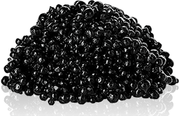

Caviar Mask
Hochwirksamer
24K-Maskenfüller,
füllt Alters- und
Gesichtsfalten
Dank der revolutionären
Technologie der Goldziehfäden
wird das Gesichtsoval vollständig
restauriert
Ihre Haut wird
in 4 Wochen
wieder jung aussehen
Effektive Verjüngung zu Hause statt
teurer kosmetischer Behandlungen
- In der Zusammensetzung - teure natürliche
Zutaten - Strafft das Gesichtsoval und glättet Falten
- Nach 4 Wochen kehrt die Haut zu allen 8 Zeichen
der Hautjugend zurück

€90
€45
€45
Effektive Verjüngung zu Hause statt teurer kosmetischer Behandlungen
- In der Zusammensetzung - teure natürliche Zutaten
- Strafft das Gesichtsoval und glättet Falten
- Nach 4 Wochen kehrt die Haut zu allen 8 Zeichen der Hautjugend zurück